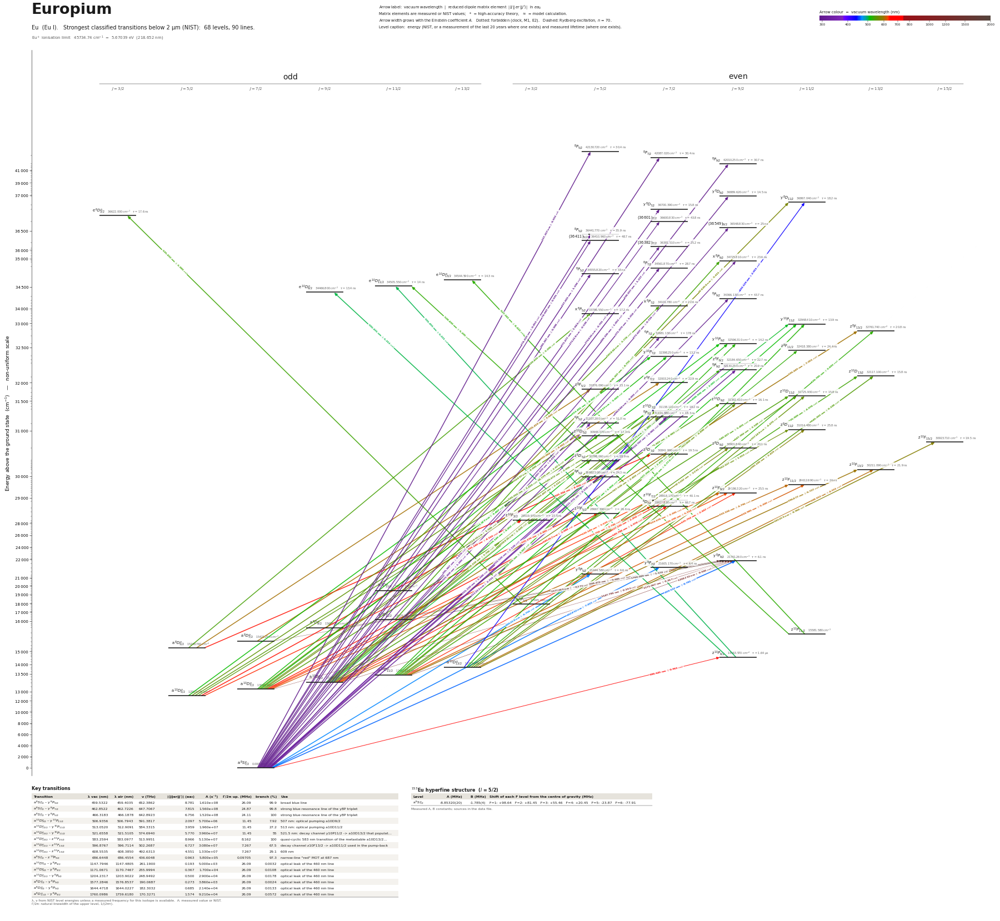

Europium energy level diagram
Energy levels and transitions of neutral europium (Eu I): the 90 strongest classified lines below 2 µm from the NIST Atomic Spectra Database and the 68 levels they connect, each line with its vacuum wavelength, frequency and, for 90 of them, the reduced dipole matrix element derived from the NIST transition rate. Measured lifetimes, transition rates, hyperfine constants and isotope shifts from the literature are included, each with its citation.
Hover a line or a level to isolate it, click to keep it selected. Scroll to zoom, drag to move.

Download: diagram (PDF) diagram (SVG) transitions (CSV) levels (CSV) source code

Key transitions of europium
| Transition | λ vac (nm) | λ air (nm) | ν (THz) | |⟨J‖er‖J′⟩| (ea₀) | A (s⁻¹) | Γ/2π up. (MHz) | branch (%) | Use |
|---|---|---|---|---|---|---|---|---|
| a 8S°7/2 – y 8P9/2 | 459.5322 | 459.4035 | 652.3862 | 8.781 | 1.610e+08 | 26.09 | 99.9 | broad blue line |
| a 8S°7/2 – y 8P7/2 | 462.8522 | 462.7226 | 647.7067 | 7.815 | 1.560e+08 | 24.87 | 99.8 | strong blue resonance line of the y8P triplet |
| a 8S°7/2 – y 8P5/2 | 466.3183 | 466.1878 | 642.8923 | 6.756 | 1.520e+08 | 24.11 | 100 | strong blue resonance line of the y8P triplet |
| a 10D°9/2 – y 10P11/2 | 506.9356 | 506.7943 | 591.3817 | 2.097 | 5.700e+06 | 11.45 | 7.92 | 507 nm: optical pumping a10D9/2 |
| a 10D°11/2 – y 10P11/2 | 513.0520 | 512.9091 | 584.3315 | 3.959 | 1.960e+07 | 11.45 | 27.2 | 513 nm: optical pumping a10D11/2 |
| a 10D°13/2 – y 10P11/2 | 521.6558 | 521.5105 | 574.6940 | 5.770 | 3.960e+07 | 11.45 | 55 | 521.5 nm: decay channel y10P11/2 -> a10D13/2 that populat… |
| a 10D°13/2 – z 10F15/2 | 583.2594 | 583.0977 | 513.9951 | 8.966 | 5.130e+07 | 8.162 | 100 | quasi-cyclic 583 nm transition of the metastable a10D13/2… |
| a 10D°11/2 – z 10F13/2 | 596.8767 | 596.7114 | 502.2687 | 6.727 | 3.080e+07 | 7.267 | 67.5 | decay channel z10F13/2 -> a10D11/2 used in the pump-back |
| a 10D°13/2 – z 10F13/2 | 608.5535 | 608.3850 | 492.6313 | 4.551 | 1.330e+07 | 7.267 | 29.1 | 609 nm |
| a 8S°7/2 – z 10P9/2 | 686.6448 | 686.4554 | 436.6048 | 0.963 | 5.800e+05 | 0.09705 | 97.3 | narrow-line "red" MOT at 687 nm |
| a 10D°7/2 – y 8P9/2 | 1147.7946 | 1147.4805 | 261.1900 | 0.193 | 5.000e+03 | 26.09 | 0.0032 | optical leak of the 460 nm line |
| a 10D°9/2 – y 8P9/2 | 1171.0671 | 1170.7467 | 255.9994 | 0.367 | 1.700e+04 | 26.09 | 0.0108 | optical leak of the 460 nm line |
| a 10D°11/2 – y 8P9/2 | 1204.2317 | 1203.9022 | 248.9492 | 0.500 | 2.900e+04 | 26.09 | 0.0178 | optical leak of the 460 nm line |
| a 8D°7/2 – y 8P9/2 | 1577.2846 | 1576.8537 | 190.0687 | 0.273 | 3.860e+03 | 26.09 | 0.0024 | optical leak of the 460 nm line |
| a 8D°9/2 – y 8P9/2 | 1644.4718 | 1644.0227 | 182.3032 | 0.685 | 2.140e+04 | 26.09 | 0.0133 | optical leak of the 460 nm line |
| a 8D°11/2 – y 8P9/2 | 1760.0986 | 1759.6180 | 170.3271 | 1.574 | 9.210e+04 | 26.09 | 0.0572 | optical leak of the 460 nm line |
λ, ν from NIST level energies unless a measured frequency for this isotope is available. A: measured value or NIST. Γ/2π: natural linewidth of the upper level, 1/(2πτ).
153Eu hyperfine structure (I = 5/2)
| Level | A (MHz) | B (MHz) | Shift of each F level from the centre of gravity (MHz) |
|---|---|---|---|
| a 8S°7/2 | -8.85320(20) | -1.785(4) | F=1: +98.64 F=2: +81.45 F=3: +55.46 F=4: +20.45 F=5: -23.87 F=6: -77.91 |
Measured A, B constants; sources in the data file.
Closed and nearly closed transitions of europium
| Transition | λ vacuum (nm) | Lower level | A (s⁻¹) | Leak per scattered photon | Photons before a leak | Where the leak goes |
|---|---|---|---|---|---|---|
| a 10D°13/2 → z 10F15/2 | 583.2594 | metastable | 5.130e+07 measured | closed | – | no other level can be reached by electric-dipole decay |
| a 8S°7/2 → y 8P9/2 | 459.5322 | ground | 1.610e+08 measured | 0.105 % from measured data | 952 | a 8D°11/2 5.72 × 10−4; a 10D°11/2 1.78 × 10−4 (long-lived); a 8D°9/2 1.33 × 10−4; 3 weaker lines |
| a 8S°7/2 → z 10P9/2 | 686.6448 | ground | 5.800e+05 measured | 2.7 % from measured data | 37 | a 10D°9/2 1.21 % (long-lived); a 10D°7/2 0.738 % (long-lived); a 10D°11/2 0.738 % (long-lived) |
A transition is closed when its upper level can decay only to the level it was excited from, so the atom keeps scattering photons. “closed”: among the levels NIST lists, no other level below the upper level has the opposite parity and |ΔJ| ≤ 1, so no other electric-dipole decay exists. Otherwise the leak is the sum of the branching ratios of the other decay lines of the upper level (or 1 − branching ratio where that of the line itself has been measured), and the number of photons is 1 / leak. “≥” and “≤”: at least one possible decay path has no listed rate, so the leak is a lower limit. These numbers are derived from the branching ratios, lifetimes and rates of this page, not measured as such; the tag names the weakest of the inputs, * marks theory and ≈ a model or semi-empirical calculation. Listed: lines that start on the ground level or on a metastable level and leak at most 10 %, unless more than three possible decay paths have no listed rate. Fine-structure levels only: hyperfine and Zeeman dark states and forbidden decays without a listed rate are not considered. Select a line in the diagram for the full list of its leak channels.
Listed Eu transitions below 2 µm
| Lower level | Upper level | λ vacuum (nm) | λ air (nm) | ν (THz) | Type | |⟨J‖er‖J′⟩| (ea₀) | A (s⁻¹) | Branching (%) | Source of matrix element / A |
|---|---|---|---|---|---|---|---|---|---|
| a 8S°7/2 | 8P5/2 | 237.3565 | 237.2840 | 1263.0472 | E1 | 0.933 NIST | 2.200e+07 NIST | 66.9 | NIST ASD (accuracy C+) |
| a 8S°7/2 | 8P7/2 | 237.6029 | 237.5304 | 1261.7371 | E1 | 1.104 NIST | 2.300e+07 NIST | 69.9 | NIST ASD (accuracy C+) |
| a 8S°7/2 | 8P9/2 | 238.0371 | 237.9645 | 1259.4356 | E1 | 1.237 NIST | 2.300e+07 NIST | 70.6 | NIST ASD (accuracy C+) |
| a 8S°7/2 | y 8D9/2 | 271.0790 | 270.9986 | 1105.9230 | E1 | 1.254 NIST | 1.600e+07 NIST | 23.2 | NIST ASD (accuracy C+) |
| a 8S°7/2 | y 8D7/2 | 272.4767 | 272.3960 | 1100.2500 | E1 | 1.046 NIST | 1.370e+07 NIST | 21.6 | NIST ASD (accuracy C+) |
| a 8S°7/2 | (36601)7/2 | 273.2178 | 273.1370 | 1097.2653 | E1 | 0.538 NIST | 3.600e+06 NIST | 15.8 | NIST ASD (accuracy C+) |
| a 8S°7/2 | (36549)9/2 | 273.6066 | 273.5256 | 1095.7064 | E1 | 0.739 NIST | 5.400e+06 NIST | 13.5 | NIST ASD (accuracy C+) |
| a 8S°7/2 | 8P5/2 | 274.4104 | 274.3292 | 1092.4968 | E1 | 0.853 NIST | 1.190e+07 NIST | 42.7 | NIST ASD (accuracy C+) |
| a 8S°7/2 | (36411)5/2 | 274.6426 | 274.5614 | 1091.5731 | E1 | 0.591 NIST | 5.700e+06 NIST | 27.8 | NIST ASD (accuracy C+) |
| a 8S°7/2 | (36382)7/2 | 274.8649 | 274.7836 | 1090.6902 | E1 | 0.701 NIST | 6.000e+06 NIST | 15.1 | NIST ASD (accuracy C+) |
| a 8S°7/2 | x 8P9/2 | 287.9702 | 287.8858 | 1041.0536 | E1 | 0.614 NIST | 3.200e+06 NIST | 7.55 | NIST ASD (accuracy C+) |
| a 8S°7/2 | 8P7/2 | 289.3362 | 289.2514 | 1036.1388 | E1 | 1.053 NIST | 1.160e+07 NIST | 33.3 | NIST ASD (accuracy C+) |
| a 8S°7/2 | 8P5/2 | 289.3869 | 289.3020 | 1035.9574 | E1 | 0.908 NIST | 1.150e+07 NIST | 38 | NIST ASD (accuracy C+) |
| a 8S°7/2 | 8P9/2 | 290.9842 | 290.8990 | 1030.2707 | E1 | 0.993 NIST | 8.100e+06 NIST | 35.4 | NIST ASD (accuracy C+) |
| a 8S°7/2 | 6P7/2 | 305.9870 | 305.8980 | 979.7556 | E1 (intercombination) | 0.670 measured | 3.970e+06 measured | 70.7 | Den Hartog, Wickliffe, Lawler, Astrophys. J. Suppl. Ser. 141, 255 (2002) |
| a 8S°7/2 | z 8F9/2 | 310.7071 | 310.6170 | 964.8715 | E1 | 0.981 measured | 6.500e+06 measured | 14.8 | Den Hartog, Wickliffe, Lawler, Astrophys. J. Suppl. Ser. 141, 255 (2002) |
| a 8S°7/2 | 8P9/2 | 311.2332 | 311.1429 | 963.2407 | E1 | 2.216 measured | 3.300e+07 measured | 69 | Den Hartog, Wickliffe, Lawler, Astrophys. J. Suppl. Ser. 141, 255 (2002) |
| a 8S°7/2 | z 10D7/2 | 321.1499 | 321.0571 | 933.4970 | E1 (intercombination) | 1.248 measured | 1.190e+07 measured | 21.7 | Den Hartog, Wickliffe, Lawler, Astrophys. J. Suppl. Ser. 141, 255 (2002) |
| a 8S°7/2 | 8P7/2 | 321.3741 | 321.2813 | 932.8456 | E1 | 2.114 measured | 3.410e+07 measured | 62.4 | Den Hartog, Wickliffe, Lawler, Astrophys. J. Suppl. Ser. 141, 255 (2002) |
| a 8S°7/2 | 6P5/2 | 321.4682 | 321.3753 | 932.5728 | E1 (intercombination) | 1.289 measured | 1.690e+07 measured | 86.7 | Den Hartog, Wickliffe, Lawler, Astrophys. J. Suppl. Ser. 141, 255 (2002) |
| a 8S°7/2 | 8P5/2 | 333.5279 | 333.4320 | 898.8527 | E1 | 2.128 measured | 4.120e+07 measured | 100 | Den Hartog, Wickliffe, Lawler, Astrophys. J. Suppl. Ser. 141, 255 (2002) |
| a 10D°13/2 | y 8D11/2 | 433.1187 | 432.9969 | 692.1716 | E1 (intercombination) | 2.011 measured | 8.400e+06 measured | 15.3 | Den Hartog, Wickliffe, Lawler, Astrophys. J. Suppl. Ser. 141, 255 (2002) |
| a 8S°7/2 | y 8P9/2 | 459.5322 | 459.4035 | 652.3862 | E1 | 8.781 measured | 1.610e+08 measured | 99.9 | Den Hartog, Wickliffe, Lawler, Astrophys. J. Suppl. Ser. 141, 255 (2002) |
| a 8S°7/2 | y 8P7/2 | 462.8522 | 462.7226 | 647.7067 | E1 | 7.815 measured | 1.560e+08 measured | 99.8 | Den Hartog, Wickliffe, Lawler, Astrophys. J. Suppl. Ser. 141, 255 (2002) |
| a 8S°7/2 | y 8P5/2 | 466.3183 | 466.1878 | 642.8923 | E1 | 6.756 measured | 1.520e+08 measured | 100 | Den Hartog, Wickliffe, Lawler, Astrophys. J. Suppl. Ser. 141, 255 (2002) |
| z 10P9/2 | e 10D°11/2 | 501.4547 | 501.3149 | 597.8455 | E1 | 5.221 measured | 3.650e+07 measured | 51.1 | Den Hartog, Wickliffe, Lawler, Astrophys. J. Suppl. Ser. 141, 255 (2002) |
| z 10P9/2 | e 10D°9/2 | 502.4310 | 502.2909 | 596.6838 | E1 | 5.313 measured | 4.510e+07 measured | 60.4 | Den Hartog, Wickliffe, Lawler, Astrophys. J. Suppl. Ser. 141, 255 (2002) |
| a 10D°9/2 | y 10P11/2 | 506.9356 | 506.7943 | 591.3817 | E1 | 2.097 measured | 5.700e+06 measured | 7.92 | Den Hartog, Wickliffe, Lawler, Astrophys. J. Suppl. Ser. 141, 255 (2002) |
| a 10D°7/2 | y 10P9/2 | 511.5767 | 511.4342 | 586.0166 | E1 | 3.487 measured | 1.840e+07 measured | 26.1 | Den Hartog, Wickliffe, Lawler, Astrophys. J. Suppl. Ser. 141, 255 (2002) |
| a 10D°11/2 | y 10P11/2 | 513.0520 | 512.9091 | 584.3315 | E1 | 3.959 measured | 1.960e+07 measured | 27.2 | Den Hartog, Wickliffe, Lawler, Astrophys. J. Suppl. Ser. 141, 255 (2002) |
| a 10D°5/2 | y 10P7/2 | 513.4912 | 513.3482 | 583.8317 | E1 | 4.607 measured | 3.970e+07 measured | 52.4 | Den Hartog, Wickliffe, Lawler, Astrophys. J. Suppl. Ser. 141, 255 (2002) |
| a 10D°9/2 | y 10P9/2 | 516.1485 | 516.0047 | 580.8260 | E1 | 4.452 measured | 2.920e+07 measured | 41.5 | Den Hartog, Wickliffe, Lawler, Astrophys. J. Suppl. Ser. 141, 255 (2002) |
| a 10D°7/2 | y 10P7/2 | 516.8132 | 516.6693 | 580.0789 | E1 | 3.669 measured | 2.470e+07 measured | 32.6 | Den Hartog, Wickliffe, Lawler, Astrophys. J. Suppl. Ser. 141, 255 (2002) |
| a 10D°13/2 | y 10P11/2 | 521.6558 | 521.5105 | 574.6940 | E1 | 5.770 measured | 3.960e+07 measured | 55 | Den Hartog, Wickliffe, Lawler, Astrophys. J. Suppl. Ser. 141, 255 (2002) |
| a 10D°11/2 | y 10P9/2 | 522.4906 | 522.3452 | 573.7758 | E1 | 3.667 measured | 1.910e+07 measured | 27.1 | Den Hartog, Wickliffe, Lawler, Astrophys. J. Suppl. Ser. 141, 255 (2002) |
| a 10D°13/2 | z 8F13/2 | 526.7855 | 526.6389 | 569.0978 | E1 (intercombination) | 3.693 measured | 1.350e+07 measured | 28.1 | Den Hartog, Wickliffe, Lawler, Astrophys. J. Suppl. Ser. 141, 255 (2002) |
| z 10P11/2 | e 10D°13/2 | 527.3424 | 527.1957 | 568.4967 | E1 | 8.422 measured | 7.000e+07 measured | 100 | Den Hartog, Wickliffe, Lawler, Astrophys. J. Suppl. Ser. 141, 255 (2002) |
| a 10D°11/2 | z 8F11/2 | 527.3936 | 527.2469 | 568.4416 | E1 (intercombination) | 2.431 measured | 6.800e+06 measured | 16.6 | Den Hartog, Wickliffe, Lawler, Astrophys. J. Suppl. Ser. 141, 255 (2002) |
| z 10P11/2 | e 10D°11/2 | 528.4303 | 528.2833 | 567.3264 | E1 | 5.205 measured | 3.100e+07 measured | 43.4 | Den Hartog, Wickliffe, Lawler, Astrophys. J. Suppl. Ser. 141, 255 (2002) |
| a 10D°9/2 | 8P9/2 | 528.8708 | 528.7237 | 566.8539 | E1 (intercombination) | 1.480 measured | 3.000e+06 measured | 6.27 | Den Hartog, Wickliffe, Lawler, Astrophys. J. Suppl. Ser. 141, 255 (2002) |
| z 6P3/2 | e 6D°3/2 | 535.4319 | 535.2831 | 559.9077 | E1 | 3.389 measured | 3.790e+07 measured | 66.7 | Den Hartog, Wickliffe, Lawler, Astrophys. J. Suppl. Ser. 141, 255 (2002) |
| a 10D°11/2 | z 10D13/2 | 535.9088 | 535.7598 | 559.4094 | E1 | 4.978 measured | 2.330e+07 measured | 36.8 | Den Hartog, Wickliffe, Lawler, Astrophys. J. Suppl. Ser. 141, 255 (2002) |
| a 8D°11/2 | x 8P9/2 | 536.3066 | 536.1575 | 558.9945 | E1 | 4.755 measured | 2.970e+07 measured | 70.1 | Den Hartog, Wickliffe, Lawler, Astrophys. J. Suppl. Ser. 141, 255 (2002) |
| a 8D°5/2 | x 8P5/2 | 539.4386 | 539.2887 | 555.7490 | E1 | 3.205 measured | 2.210e+07 measured | 38 | Den Hartog, Wickliffe, Lawler, Astrophys. J. Suppl. Ser. 141, 255 (2002) |
| a 10D°9/2 | z 10D11/2 | 540.4269 | 540.2767 | 554.7327 | E1 | 5.401 measured | 3.120e+07 measured | 49.3 | Den Hartog, Wickliffe, Lawler, Astrophys. J. Suppl. Ser. 141, 255 (2002) |
| a 8D°9/2 | x 8P7/2 | 542.8440 | 542.6931 | 552.2627 | E1 | 3.778 measured | 2.260e+07 measured | 51.1 | Den Hartog, Wickliffe, Lawler, Astrophys. J. Suppl. Ser. 141, 255 (2002) |
| a 10D°13/2 | z 10D13/2 | 545.3032 | 545.1517 | 549.7720 | E1 | 6.108 measured | 3.330e+07 measured | 52.6 | Den Hartog, Wickliffe, Lawler, Astrophys. J. Suppl. Ser. 141, 255 (2002) |
| a 10D°7/2 | z 10D9/2 | 545.4433 | 545.2918 | 549.6308 | E1 | 4.983 measured | 3.100e+07 measured | 49.9 | Den Hartog, Wickliffe, Lawler, Astrophys. J. Suppl. Ser. 141, 255 (2002) |
| a 10D°11/2 | z 10D11/2 | 547.3837 | 547.2317 | 547.6825 | E1 | 3.148 measured | 1.020e+07 measured | 16.1 | Den Hartog, Wickliffe, Lawler, Astrophys. J. Suppl. Ser. 141, 255 (2002) |
| a 10D°5/2 | z 10D7/2 | 549.0165 | 548.8640 | 546.0537 | E1 | 3.410 measured | 1.780e+07 measured | 32.4 | Den Hartog, Wickliffe, Lawler, Astrophys. J. Suppl. Ser. 141, 255 (2002) |
| a 10D°5/2 | 8P7/2 | 549.6722 | 549.5195 | 545.4022 | E1 (intercombination) | 2.096 measured | 6.700e+06 measured | 12.3 | Den Hartog, Wickliffe, Lawler, Astrophys. J. Suppl. Ser. 141, 255 (2002) |
| a 10D°7/2 | z 10D7/2 | 552.8157 | 552.6622 | 542.3009 | E1 | 1.586 measured | 3.770e+06 measured | 6.86 | Den Hartog, Wickliffe, Lawler, Astrophys. J. Suppl. Ser. 141, 255 (2002) |
| a 10D°5/2 | z 10D5/2 | 554.8974 | 554.7433 | 540.2665 | E1 | 4.099 measured | 3.320e+07 measured | 57.4 | Den Hartog, Wickliffe, Lawler, Astrophys. J. Suppl. Ser. 141, 255 (2002) |
| a 10D°13/2 | z 10D11/2 | 557.1884 | 557.0337 | 538.0450 | E1 | 4.470 measured | 1.950e+07 measured | 30.8 | Den Hartog, Wickliffe, Lawler, Astrophys. J. Suppl. Ser. 141, 255 (2002) |
| a 10D°11/2 | z 10D9/2 | 557.8676 | 557.7127 | 537.3900 | E1 | 4.898 measured | 2.800e+07 measured | 45.1 | Den Hartog, Wickliffe, Lawler, Astrophys. J. Suppl. Ser. 141, 255 (2002) |
| a 10D°9/2 | z 10D7/2 | 558.1581 | 558.0032 | 537.1103 | E1 | 3.706 measured | 2.000e+07 measured | 36.4 | Den Hartog, Wickliffe, Lawler, Astrophys. J. Suppl. Ser. 141, 255 (2002) |
| a 10D°7/2 | z 10D5/2 | 558.7788 | 558.6237 | 536.5137 | E1 | 2.972 measured | 1.710e+07 measured | 29.6 | Den Hartog, Wickliffe, Lawler, Astrophys. J. Suppl. Ser. 141, 255 (2002) |
| a 10D°9/2 | 8P7/2 | 558.8359 | 558.6808 | 536.4588 | E1 (intercombination) | 2.420 measured | 8.500e+06 measured | 15.6 | Den Hartog, Wickliffe, Lawler, Astrophys. J. Suppl. Ser. 141, 255 (2002) |
| a 10D°9/2 | z 8D11/2 | 562.0365 | 561.8805 | 533.4039 | E1 (intercombination) | 1.653 measured | 2.600e+06 measured | 6.71 | Den Hartog, Wickliffe, Lawler, Astrophys. J. Suppl. Ser. 141, 255 (2002) |
| a 10D°7/2 | z 8D5/2 | 563.4069 | 563.2506 | 532.1064 | E1 (intercombination) | 2.510 measured | 1.190e+07 measured | 22.5 | Den Hartog, Wickliffe, Lawler, Astrophys. J. Suppl. Ser. 141, 255 (2002) |
| a 10D°9/2 | z 8D7/2 | 567.5385 | 567.3810 | 528.2328 | E1 (intercombination) | 2.403 measured | 8.000e+06 measured | 15.6 | Den Hartog, Wickliffe, Lawler, Astrophys. J. Suppl. Ser. 141, 255 (2002) |
| a 10D°11/2 | z 8D9/2 | 573.2423 | 573.0833 | 522.9769 | E1 (intercombination) | 2.261 measured | 5.500e+06 measured | 11.1 | Den Hartog, Wickliffe, Lawler, Astrophys. J. Suppl. Ser. 141, 255 (2002) |
| b 8D°11/2 | y 8D11/2 | 574.0578 | 573.8986 | 522.2340 | E1 | 5.611 measured | 2.810e+07 measured | 51.1 | Den Hartog, Wickliffe, Lawler, Astrophys. J. Suppl. Ser. 141, 255 (2002) |
| a 10D°13/2 | z 8D11/2 | 580.1877 | 580.0269 | 516.7163 | E1 (intercombination) | 2.429 measured | 5.100e+06 measured | 13.2 | Den Hartog, Wickliffe, Lawler, Astrophys. J. Suppl. Ser. 141, 255 (2002) |
| a 10D°13/2 | z 10F15/2 | 583.2594 | 583.0977 | 513.9951 | E1 | 8.966 measured | 5.130e+07 measured | 100 | Den Hartog, Wickliffe, Lawler, Astrophys. J. Suppl. Ser. 141, 255 (2002) |
| a 10D°11/2 | z 10F13/2 | 596.8767 | 596.7114 | 502.2687 | E1 | 6.727 measured | 3.080e+07 measured | 67.5 | Den Hartog, Wickliffe, Lawler, Astrophys. J. Suppl. Ser. 141, 255 (2002) |
| a 8D°11/2 | z 8F13/2 | 599.4492 | 599.2832 | 500.1132 | E1 | 7.051 measured | 3.340e+07 measured | 69.5 | Den Hartog, Wickliffe, Lawler, Astrophys. J. Suppl. Ser. 141, 255 (2002) |
| a 8D°5/2 | z 8F5/2 | 601.4195 | 601.2529 | 498.4748 | E1 | 3.841 measured | 2.290e+07 measured | 52.9 | Den Hartog, Wickliffe, Lawler, Astrophys. J. Suppl. Ser. 141, 255 (2002) |
| a 8D°7/2 | z 8F7/2 | 603.0639 | 602.8970 | 497.1155 | E1 | 4.662 measured | 2.510e+07 measured | 57.5 | Den Hartog, Wickliffe, Lawler, Astrophys. J. Suppl. Ser. 141, 255 (2002) |
| a 10D°13/2 | z 10F13/2 | 608.5535 | 608.3850 | 492.6313 | E1 | 4.551 measured | 1.330e+07 measured | 29.1 | Den Hartog, Wickliffe, Lawler, Astrophys. J. Suppl. Ser. 141, 255 (2002) |
| a 10D°9/2 | z 10F11/2 | 610.1039 | 609.9351 | 491.3793 | E1 | 4.796 measured | 1.710e+07 measured | 41 | Den Hartog, Wickliffe, Lawler, Astrophys. J. Suppl. Ser. 141, 255 (2002) |
| a 10D°11/2 | z 10F11/2 | 618.9850 | 618.8138 | 484.3291 | E1 | 5.300 measured | 2.000e+07 measured | 48 | Den Hartog, Wickliffe, Lawler, Astrophys. J. Suppl. Ser. 141, 255 (2002) |
| a 10D°7/2 | z 10F9/2 | 619.6777 | 619.5063 | 483.7877 | E1 | 3.305 measured | 9.300e+06 measured | 23.7 | Den Hartog, Wickliffe, Lawler, Astrophys. J. Suppl. Ser. 141, 255 (2002) |
| a 10D°9/2 | z 10F9/2 | 626.3984 | 626.2252 | 478.5971 | E1 | 5.154 measured | 2.190e+07 measured | 55.9 | Den Hartog, Wickliffe, Lawler, Astrophys. J. Suppl. Ser. 141, 255 (2002) |
| a 10D°7/2 | z 10F7/2 | 630.1487 | 629.9745 | 475.7487 | E1 | 3.639 measured | 1.340e+07 measured | 53.7 | Den Hartog, Wickliffe, Lawler, Astrophys. J. Suppl. Ser. 141, 255 (2002) |
| a 10D°7/2 | 8D7/2 | 633.7565 | 633.5813 | 473.0404 | E1 (intercombination) | 2.746 measured | 7.500e+06 measured | 50 | Den Hartog, Wickliffe, Lawler, Astrophys. J. Suppl. Ser. 141, 255 (2002) |
| a 10D°5/2 | z 10F5/2 | 635.1759 | 635.0003 | 471.9833 | E1 | 3.485 measured | 1.600e+07 measured | 42.6 | Den Hartog, Wickliffe, Lawler, Astrophys. J. Suppl. Ser. 141, 255 (2002) |
| a 10D°11/2 | z 10F9/2 | 635.7639 | 635.5881 | 471.5469 | E1 | 2.442 measured | 4.700e+06 measured | 12 | Den Hartog, Wickliffe, Lawler, Astrophys. J. Suppl. Ser. 141, 255 (2002) |
| a 10D°9/2 | z 10F7/2 | 637.0997 | 636.9236 | 470.5581 | E1 | 2.454 measured | 5.900e+06 measured | 23.7 | Den Hartog, Wickliffe, Lawler, Astrophys. J. Suppl. Ser. 141, 255 (2002) |
| a 10D°7/2 | z 10F5/2 | 640.2668 | 640.0898 | 468.2305 | E1 | 3.688 measured | 1.750e+07 measured | 46.6 | Den Hartog, Wickliffe, Lawler, Astrophys. J. Suppl. Ser. 141, 255 (2002) |
| a 10D°9/2 | 8D7/2 | 640.7878 | 640.6107 | 467.8498 | E1 (intercombination) | 1.974 measured | 3.750e+06 measured | 25 | Den Hartog, Wickliffe, Lawler, Astrophys. J. Suppl. Ser. 141, 255 (2002) |
| a 10D°5/2 | z 10F3/2 | 641.1798 | 641.0026 | 467.5638 | E1 | 4.169 measured | 3.340e+07 measured | 91.8 | Den Hartog, Wickliffe, Lawler, Astrophys. J. Suppl. Ser. 141, 255 (2002) |
| a 8D°5/2 | z 8D7/2 | 641.3040 | 641.1267 | 467.4733 | E1 | 4.926 measured | 2.330e+07 measured | 45.4 | Den Hartog, Wickliffe, Lawler, Astrophys. J. Suppl. Ser. 141, 255 (2002) |
| a 8S°7/2 | z 10P9/2 | 686.6448 | 686.4554 | 436.6048 | E1 (intercombination) | 0.963 measured | 5.800e+05 measured | 97.3 | NIST ASD Eu I lines table (local copy data/nist/Eu_I_lines_from1nm.tsv) |
| a 10D°7/2 | y 8P9/2 | 1147.7946 | 1147.4805 | 261.1900 | E1 (intercombination) | 0.193 measured | 5.000e+03 measured | 0.0032 | Miyazawa, Inoue, Matsui, Takanashi, Kozuma, Phys. Rev. A 103, 053122 (2021) |
| a 10D°9/2 | y 8P9/2 | 1171.0671 | 1170.7467 | 255.9994 | E1 (intercombination) | 0.367 measured | 1.700e+04 measured | 0.0108 | Miyazawa, Inoue, Matsui, Takanashi, Kozuma, Phys. Rev. A 103, 053122 (2021) |
| a 10D°11/2 | y 8P9/2 | 1204.2317 | 1203.9022 | 248.9492 | E1 (intercombination) | 0.500 measured | 2.900e+04 measured | 0.0178 | Miyazawa, Inoue, Matsui, Takanashi, Kozuma, Phys. Rev. A 103, 053122 (2021) |
| a 8D°7/2 | y 8P9/2 | 1577.2846 | 1576.8537 | 190.0687 | E1 | 0.273 measured | 3.860e+03 measured | 0.0024 | Miyazawa, Inoue, Nishida, Hosoya, Kozuma, Opt. Commun. 392, 171 (2017) |
| a 8D°9/2 | y 8P9/2 | 1644.4718 | 1644.0227 | 182.3032 | E1 | 0.685 measured | 2.140e+04 measured | 0.0133 | Miyazawa, Inoue, Nishida, Hosoya, Kozuma, Opt. Commun. 392, 171 (2017) |
| a 8D°11/2 | y 8P9/2 | 1760.0986 | 1759.6180 | 170.3271 | E1 | 1.574 measured | 9.210e+04 measured | 0.0572 | Miyazawa, Inoue, Nishida, Hosoya, Kozuma, Opt. Commun. 392, 171 (2017) |
Reduced dipole matrix elements follow the convention A = ω³|d|²/(3πε₀ħc³(2J′+1)), with J′ the upper level. Tags show where a number comes from: measured, NIST compilation, high-accuracy theory, or a model calculation.
Eu energy levels
Eu⁺ ionisation limit 45734.74 cm⁻¹ = 5.67039 eV (218.652 nm)
Sources
- Den Hartog, Wickliffe, Lawler, Astrophys. J. Suppl. Ser. 141, 255 (2002)
- Fechner, Rinkleff, Steudel, Z. Phys. D 6, 31 (1987), linewidth as quoted by Inoue, Miyaza…
- Miyazawa, Inoue, Matsui, Takanashi, Kozuma, Phys. Rev. A 103, 053122 (2021)
- Miyazawa, Inoue, Nishida, Hosoya, Kozuma, Opt. Commun. 392, 171 (2017)
- Miyazawa, Inoue, Nishida, Hosoya, Kozuma, Opt. Commun. 392, 171 (2017). Note: derived: me…
- NIST ASD
- NIST ASD Eu I lines table (local copy data/nist/Eu_I_lines_from1nm.tsv)
- NIST ASD level energies
- Sandars, Woodgate, Proc. R. Soc. Lond. A 257, 269 (1960)
Lifetimes (85 levels, Table 1) and transition probabilities (140 lines, Table 4) were parsed from the text layer of the publisher PDF of Den Hartog et al. 2002 retrieved through the Internet Archive (iopscience.iop.org itself is bot-blocked); the +- signs are lost in the text layer but value/uncertainty pairs are unambiguous, and the count of parsed rows (85, 140) matches the numbers stated in the abstract. Den Hartog level energies are those of Martin, Zalubas, Hagan (1978) and coincide with the NIST energies used as identifiers. NIST ASD already carries the Den Hartog A values (same numbers); they are repeated here with their uncertainties. rme_J_ea0 entries are derived from the measured A with the SCHEMA convention. Hyperfine constants follow E = A K/2 + B [3K(K+1)/4 - I(I+1)J(J+1)] / [2I(2I-1)J(2J-1)]; both ground-state A values are negative. Extra fields beyond SCHEMA.md: top-level ionization_limit, laser_cooling_scheme, conflicts; level fields lifetime_other, hyperfine_note, decay_to_metastable, trap_loss, magnetic_moment_muB; transition fields linewidth_MHz / linewidth_kHz, saturation_intensity_*, doppler_limit_uK, leak_to_metastable. Entries whose note says LOWER BOUND / UPPER BOUND / derived are not direct measurements of the stated quantity. The line the brief calls "1148 nm" is the y8P9/2 -> a10D7/2 leak / repumper.
Atoms with measured data
- Lithium-632 levels, 85 lines
- Lithium-732 levels, 85 lines
- Beryllium-917 levels, 26 lines
- Sodium-2336 levels, 106 lines
- Magnesium-2418 levels, 61 lines
- Magnesium-2518 levels, 61 lines
- Potassium-3934 levels, 84 lines
- Potassium-4034 levels, 84 lines
- Potassium-4134 levels, 84 lines
- Calcium-4035 levels, 61 lines
- Calcium-4335 levels, 61 lines
- Chromium-5256 levels, 87 lines
- Chromium-5356 levels, 87 lines
- Rubidium-8536 levels, 94 lines
- Rubidium-8736 levels, 94 lines
- Strontium-8440 levels, 70 lines
- Strontium-8640 levels, 70 lines
- Strontium-8740 levels, 70 lines
- Strontium-8840 levels, 70 lines
- Cadmium-11115 levels, 21 lines
- Cadmium-11315 levels, 21 lines
- Cadmium-11415 levels, 21 lines
- Caesium-13331 levels, 79 lines
- Barium-13744 levels, 89 lines
- Barium-13844 levels, 89 lines
- Dysprosium-16139 levels, 55 lines
- Dysprosium-16239 levels, 55 lines
- Dysprosium-16339 levels, 55 lines
- Dysprosium-16439 levels, 55 lines
- Erbium-16673 levels, 90 lines
- Erbium-16773 levels, 90 lines
- Erbium-16873 levels, 90 lines
- Thulium-16972 levels, 73 lines
- Ytterbium-17118 levels, 26 lines
- Ytterbium-17318 levels, 26 lines
- Ytterbium-17418 levels, 26 lines
- Mercury-19927 levels, 47 lines
- Mercury-20127 levels, 47 lines
- Mercury-20227 levels, 47 lines